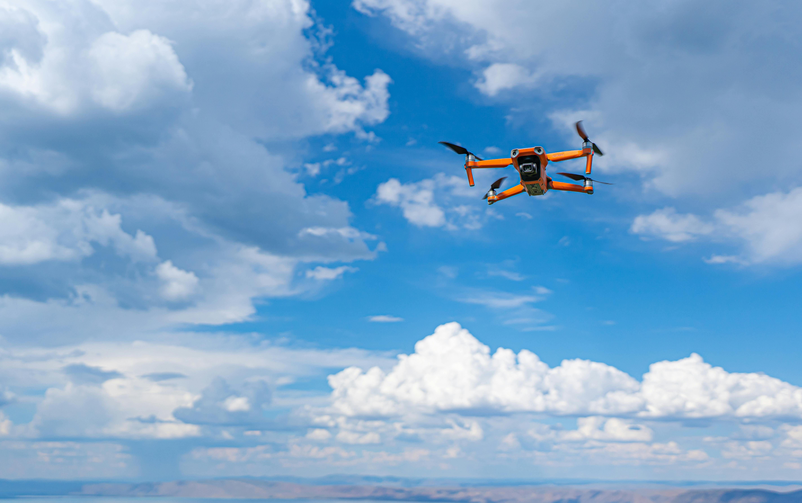
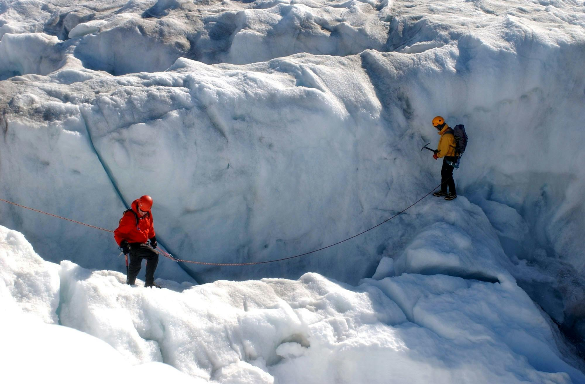
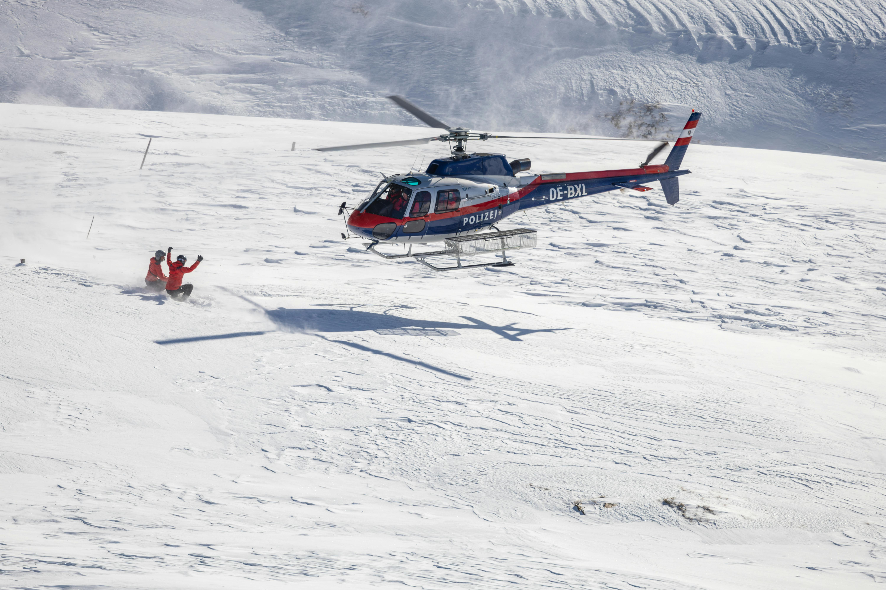

Search & Navigation
GPS & Satellite Communications – Ensures real-time tracking and communication, even in remote areas.
Thermal Imaging Drones – Used for night rescues and locating missing persons in low-visibility conditions.
Avalanche Beacons & Probes – Essential for detecting buried individuals during avalanche rescues.
Rescue Dogs – Highly trained search-and-rescue dogs assist in locating missing hikers and avalanche victims.

Technical Rescue Gear
Rope & Harness Systems – Used for high-angle rescues on cliffs and steep slopes.
Ice Axes & Crampons – Essential for navigating icy and high-altitude terrain.
Pull Sleds & Stretcher Systems – Designed for transporting injured individuals safely over snow and rough terrain.

Air & Ground Response Units
Rescue Helicopters – Equipped with hoist systems for swift extractions from inaccessible areas.
All-Terrain Snowmobiles & ATVs – Used for rapid response in deep snow and rugged environments.
4x4 Emergency Vehicles – Equipped with medical supplies and GPS systems for quick deployment.
